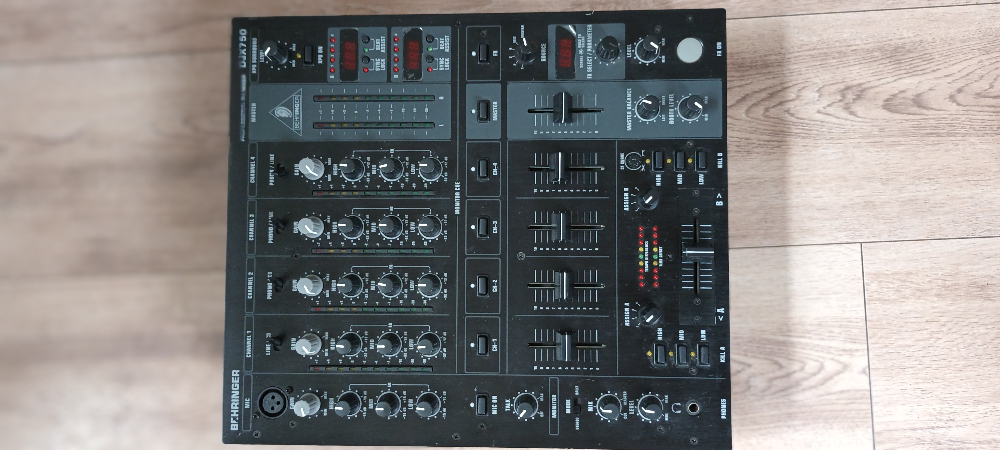
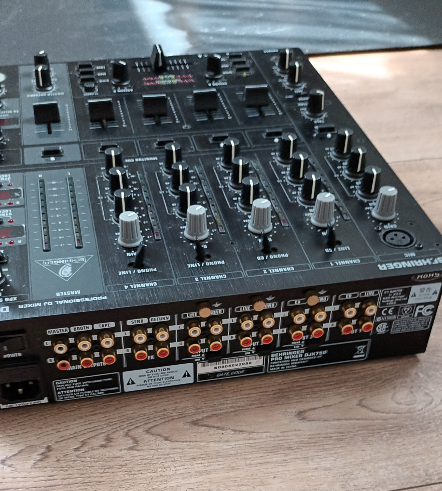
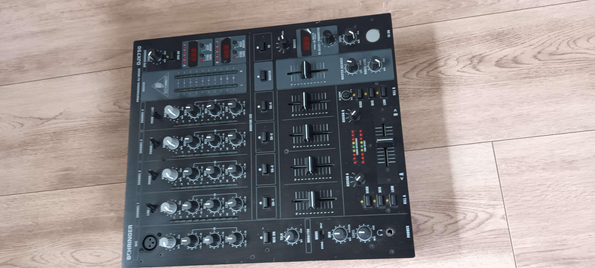

Behringer PRO MIXER DJX750
Professioneller 5-Kanal-DJ-Mixer
Wichtiger Hinweis:
Der Verkauf erfolgt ausschließlich über
Kleinanzeigen.
Diese Seite dient lediglich dazu, alle Informationen
zum angebotenen Gerät übersichtlich bereitzustellen.
Zustand
Der Mixer befindet sich in einem prima Zustand.
Er wurde ausschließlich von mir für private Feiern genutzt
und stets pfleglich behandelt.
Teilweise befinden sich sogar noch die originalen Schutzfolien
auf den Displays.
Alle Fader, Potis, LEDs und Anschlüsse funktionieren
einwandfrei und kratzen nicht.
Der damalige Neupreis betrug 249,- EUR.
Das Wichtigste auf einen Blick
✔ Professioneller 5-Kanal-DJ-Mixer
mit extrem rauscharmen Vorverstärkern.
✔ Digitale 24-Bit-Effektverarbeitung
Echo, Delay, Reverb, Flanger und weitere Effekte.
✔ Dualer BPM-Counter
mit Tempo-, Time-Offset- und Sync-Anzeige.
✔ 3-Band-EQ pro Kanal
für präzise Klangregelung.
✔ XPQ 3D Surround
für einen räumlicheren Stereo-Klang.
✔ Robustes Metallgehäuse
hochwertig verarbeitet und zuverlässig.
Bilder
Durch Anklicken kann jedes Bild in voller Größe betrachtet werden.



Alle Fotos zeigen das tatsächlich angebotene Gerät.
Funktionen im Detail
Nachfolgend sind sämtliche Funktionen des Mixers
übersichtlich beschrieben.
Zusätzlich werden Fachbegriffe kurz erläutert,
damit auch Interessenten ohne DJ-Erfahrung
die Ausstattung besser einschätzen können.
1. Kanäle & Mix-Möglichkeiten (Eingangssektion)
Der DJX750 verfügt über insgesamt 5 Kanäle:
vier Stereo-Kanäle für Musikquellen sowie einen separaten
Mikrofonkanal.
-
4 Stereo-Kanäle (Channel 1–4)
Jeder Kanal besitzt einen eigenen Quellwahlschalter,
über den sich die gewünschte Signalquelle auswählen lässt.
Je nach Kanal können beispielsweise Line-, Phono- oder CD-Signale
verwendet werden.
-
Gain-Regler
Regelt den Eingangspegel jedes einzelnen Kanals.
Damit können unterschiedlich laute Signalquellen
optimal aufeinander angepasst werden.
-
3-Band-Kill-EQ
Für jeden Kanal stehen getrennte Regler für
Bässe (Low), Mitten (Mid) und Höhen (High)
zur Verfügung.
Die Frequenzen lassen sich bis zu
-32 dB absenken
oder um
+12 dB anheben.
-
10-stellige LED-Pegelanzeige
Ermöglicht das präzise Aussteuern jedes Kanals
und verhindert Übersteuerungen.
-
45-mm-Ultraglide-Fader
Besonders leichtgängige Kanalfader
mit einer Lebensdauer von bis zu
500.000 Bewegungen.
2. Crossfader & Zuweisung
Der Crossfader dient zum weichen Überblenden
zwischen zwei Musikquellen.
Für Scratch-DJs lässt sich seine Arbeitsweise
individuell anpassen.
-
CF Assign A / B
Die Hauptkanäle 1 bis 4 können flexibel
dem linken oder rechten Bereich des Crossfaders
zugeordnet werden.
-
Spannungsgesteuerter Crossfader
Sorgt für besonders zuverlässige
und gleichmäßige Übergänge.
-
Crossfader Curve Control
Die Kennlinie lässt sich stufenlos einstellen –
von sanften Überblendungen bis zu
harten Cuts für Scratch-Techniken.
3. Anschlussmöglichkeiten (Ein- und Ausgänge)
Der DJX750 bietet umfangreiche Anschlussmöglichkeiten
für nahezu alle gängigen DJ-Geräte.
Eingänge
- 3 × Phono (Cinch)
Zum Anschluss von Plattenspielern
(Kanäle 2, 3 und 4).
- 5 × Line (Cinch)
Für CD-Player, Mediaplayer,
PCs oder Smartphones.
- 1 × Mikrofon (XLR)
Symmetrischer Mikrofoneingang
auf der Oberseite.
Ausgänge
- Main Out 1
Hauptausgang zur PA-Anlage,
regelbar über den Master-Fader.
- Main Out 2
Zusätzlicher Ausgang
für eine zweite Anlage oder Zone.
- Booth Out
Separater Ausgang für Monitorlautsprecher
am DJ-Platz.
Die Lautstärke wird unabhängig
vom Master geregelt.
- Tape Out
Konstanter Aufnahmeausgang,
unabhängig von der Masterlautstärke.
FX-Loop
-
Send & Return
Zum Einschleifen eines zusätzlichen
externen Effektgerätes.
Kopfhörer
-
6,3-mm-Klinkenanschluss
Für den DJ-Kopfhörer.
4. Digitale Effekte (24-Bit FX-Prozessor)
Der integrierte digitale Effektprozessor
arbeitet mit einer 24-Bit-Auflösung
und ermöglicht kreative Klangbearbeitung
während des Mixens.
- Delay
Erzeugt wiederholte Echos.
- Reverb
Erzeugt einen natürlichen Halleffekt.
- Flanger
Sorgt für einen schwebenden,
jetähnlichen Klang.
- Filter
Hebt bestimmte Frequenzbereiche hervor
oder blendet sie aus.
- Panner
Bewegt das Signal zwischen
linkem und rechtem Lautsprecher.
- Phaser
Erzeugt bewegte Filtereffekte
mit schwebendem Charakter.
- Weitere Effektkombinationen
Alle Effekte können über den
Programmwahlschalter ausgewählt werden.
Der Parameter-Regler verändert
Zeit oder Intensität des jeweiligen Effektes.
Über den Mix-Regler wird das Verhältnis
zwischen Originalsignal (Dry)
und Effektsignal (Wet) eingestellt.
Die Effekte können den Kanälen 1 bis 4,
dem Mikrofon,
dem Crossfader
oder dem Master-Ausgang
zugewiesen werden.
5. BPM-Counter (Taktanalyse)
Der DJX750 besitzt zwei automatische
BPM-Counter.
-
Zeigen das Tempo zweier Titel
gleichzeitig digital an.
-
Sync Lock
Hilft beim Angleichen
zweier Musikstücke.
-
Beat Assist
LED-Anzeigen unterstützen
das Beatmatching.
-
Time Offset
Zeigt die zeitliche Differenz
zwischen beiden Titeln an.
6. Mikrofon-Funktionen
Der DJX750 besitzt einen separaten Mikrofonkanal mit
umfangreichen Einstellmöglichkeiten.
-
XLR-Mikrofoneingang
Symmetrischer Anschluss für Mikrofone.
-
3-Band-EQ
Separate Klangregelung für
Höhen, Mitten und Bässe.
-
Talkover-Funktion
Sobald in das Mikrofon gesprochen wird,
werden die Musikkanäle automatisch abgesenkt.
Die Stärke dieser Absenkung lässt sich
individuell einstellen.
-
Eigener Lautstärkeregler
Unabhängige Lautstärkeregelung
für das Mikrofon.
7. Monitoring & Cue-Sektion
Die Monitoring-Sektion ermöglicht das komfortable
Vorhören einzelner Kanäle über Kopfhörer,
ohne dass das Publikum diese hört.
-
Master / Cue Mix
Stufenlose Überblendung zwischen
Vorhörsignal und Mastersignal.
-
Split Cue
Cue-Signal auf einem Ohr,
Master-Signal auf dem anderen Ohr.
-
Cue-Tasten
Kanäle 1 bis 4 sowie die Effektsektion
lassen sich einzeln oder gemeinsam
auf den Kopfhörer schalten.
-
Kopfhörer-Lautstärke
Separater Lautstärkeregler.
8. Master-Sektion & Sound-Erweiterung
-
Master-Fader
Zentrale Lautstärkeregelung
des Hauptausgangs.
-
Booth-Regler
Separate Lautstärkeregelung
für Monitorlautsprecher.
-
Balance-Regler
Einstellung der Links-/Rechts-Verteilung
des Ausgangssignals.
-
XPQ 3D Surround
Zuschaltbarer Stereo-Verbreiterungseffekt
mit einstellbarer Intensität.
Das Klangbild wirkt dadurch räumlicher.
-
Große Master-LED-Kette
Zwei 10-stellige LED-Anzeigen
zur Kontrolle des Ausgangspegels.
Lieferumfang
- ✔ Behringer PRO MIXER DJX750
- ✔ Netzkabel
- ✔ Bedienungsanleitung
Technische Daten
| Merkmal |
Angabe |
| Kanäle |
5 |
| Abmessungen |
ca. 10,5 × 32 × 37 cm |
| Gewicht |
ca. 4 kg |
Abholung & Versand
Eine Abholung ist in
02692 Obergurig
möglich.
Nach vorheriger Absprache kann der Mixer
gern vorgeführt werden.
Ein versicherter Versand ist bei Übernahme
der Versandkosten ebenfalls möglich.
Rechtlicher Hinweis
Da es sich um einen Privatverkauf handelt,
erfolgt der Verkauf unter Ausschluss
jeglicher Gewährleistung,
Garantie oder Rücknahme.
Bei Fragen einfach kurz schreiben.
Ich antworte in der Regel schnell.
Noch einmal der Hinweis:
Der Verkauf erfolgt ausschließlich
über Kleinanzeigen.
Diese Seite dient lediglich
als ausführliche Informationsseite
zum angebotenen Gerät.